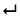

Struktur des Manuskripts



 Absatz
Absatz
Absätze werden mit<p> (paragraph) gekennzeichnet. Ein neuer Absatz kann auf zwei Arten eingefügt werden:
1. Cursor im vorhergehenden Absatz platzieren und in der Werkzeugleiste  anklicken.
anklicken.
2. Am Ende des vorhergehenden Absatzes bzw. am Anfang des nachfolgenden Absatzes den Cursor platzieren, Return drücken und „Teilen p“ auwählen – in dem man einfach nochmals Return drückt.
 Zeilenumbruch
Zeilenumbruch
Sollen die Zeilenumbrüche des Manuksripts transkribiert werden, so können sie mit dem leeren Element <lb/> (linebreak) notiert werden. Im Autormodus wird dann automatisch ein Zeilenumbruch (vor dem Element) angezeigt. In der weiteren Verarbeitungen können die Zeilenumbrüche wahlweise verwendet oder ignoriert werden.
Der Zeilenumbruch kann über die Werkzeugleiste oder per Tastaturkürzel [Strg] + [L] gesetzt werden.
 Listen
Listen
Listen im Manuskript werden mit <list/> (bzw. mit <item> die einezlnen Punkte) ausgezeichnet. Je nach Art der Liste – nummiert oder unnummeriert – wird der Wert des Attributs @type auf „ordered“ oder „unordered“ gesetzt. Das Attribut wird bei Benutzung der Schaltflächen automatisch zugewiesen.
 Anmerkung des Autors
Anmerkung des Autors
Anmerkungen werden an der entsprechenden Textstelle (an der im Manuskript das Verweiszeichen bzw. -ziffer steht). Das Verweiszeichen entfällt bei der Transkription. Der Inhalt der Fußnote wird mit <note> gekennzeichnet:
An die kleine Frau, die Dir gewiß gefallen wird, gebe ich Dir noch eigene Briefe mit.<note resp=“Autor“>Ich konnte sie nicht mehr mit der Post schicken.</note> Niemeyer hat sich in der ganzen Sache sehr gut benommen, welches mich in jeder Rücksicht freut.
Im Attribut wird standardmäßig resp=“Autor“ notiert, um externen Forschern direkt zu 33 vermitteln, dass es sich nicht um eine Anmerkung der Herausgeber, sondern des Autors handelt. Das Attribut wird beim Verwenden der Werkzeugleiste automatisch gesetzt.
 Seiten- bzw. Foliowechsel
Seiten- bzw. Foliowechsel
Ein Seitenwechsel bzw. Foliowechsel in der Vorlage wird mit dem leeren Element <pb> (pagebreak) gekennzeichnet. Das Attribut @ed wird gesetzt, wenn es sich nicht um die Foliazählung das Manuskript handelt, sondern eines Drucks oder einer Abschrift handelt; @n enthält die Seiten- bzw. Foliozahl.
mich überhaupt in <pb n=“17v“ />völliger Unkunde lässest
In der Autoransicht wird der Foliowechsel mit einem senkrechten Strich „|“ dargestellt. Ist die Foliozahl vermerkt worden, wird sie in Klammer dahinter angezeigt.